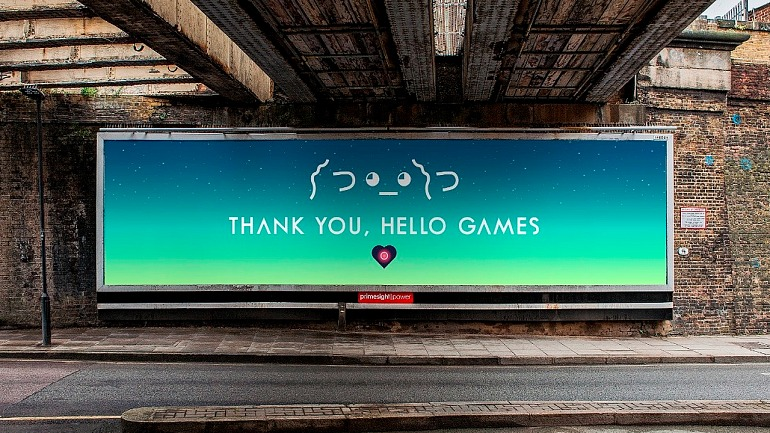

No man's sky es un videojuego lanzado en agosto de 2016, disponible practicamente en todas las plataformas. Es una experiencia de un solo jugador enfocada en la exploracion espacial, construccion de bases y de naves, con un sin fin de mecanicas que no nos dara el tiempo de abarcar en esta pagina; SIn embargo, para mi una de las cosas mas interesantes no tiene que ver con el aspecto jugable, es mas bien externo a este y es la comunidad que forjo con los años.
Desde su lanzamiento, Hello Games destruyó la confianza de su comunidad: el juego llegó roto, plagado de bugs y con apenas una fracción del contenido prometido, ganándose que toda la comunidad lo etiquete de estafa. Sin embargo, en lugar de embolsarse los millones y huir hacia otro proyecto, el estudio decidió redimirse trabajando en silencio. Diez años y decenas de actualizaciones gratuitas después, no solo cumplieron lo que juraron, sino que superaron cualquier expectativa. Hoy, el caso de No Man's Sky no es solo un milagro de la industria, sino una de las pocas reconciliaciones genuinas entre una desarrolladora y su comunidad.
LISTADO DE MOMENTOS DE LA COMUNIDAD: